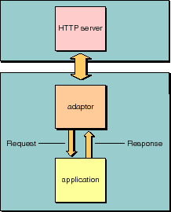

Table of Contents
Table of Contents  Next Section
Table of Contents
Next Section
Table of Contents  Previous Section
Previous Section

Figure 15. Request-Response Loop: Application and Server Level
Defines the interface for objects mediating the exchange of data between an HTTP server and a WebObjects application. This is an abstract class.
Receives requests from the adaptor, determines which request handler should handle the request, and forwards the request to that handler. After the request handler completes its processing, the application returns a response to the adaptor. WOApplication also creates dynamic elements "on the fly" and manages adaptors, sessions, application resources, and components.
Manages the process of request handling and returns the completed response to the application. This is an abstract class.
Table of Contents Next Section